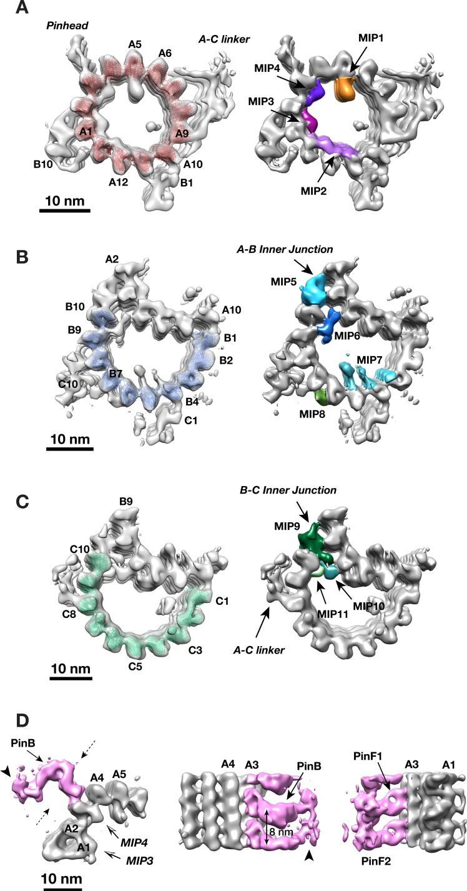

basal body pinhead
A proteinaceous subassembly on the luminal face of the A-tubule in the proximal region of a microbial ciliary basal body or pro-basal body, forming the peripheral connection toward the cartwheel spokes. In Chlamydomonas reinhardtii it has a bent pinbody and two pinfeet attached to protofilament A3. [DOI:10.7554/eLife.43434]

NCBITaxon:3055) · Sam Li, Jose-Jesus Fernandez, Wallace F Marshall, David A Agard; CC BY 4.0, via PubMed Central · CC_BY_4_0 · source: PMC PMC6384029.1 fig2 · DOI:10.7554/eLife.43434Synonyms: centriole pinhead
Part of: ciliary basal body (GO:0036064); GO:0120280 — ciliary pro-basal body (no local record)
Components
| Component | Type | Part of / acts on | Grounding | Genes | Stoichiometry | Essential | Role |
|---|---|---|---|---|---|---|---|
| Bld10/Cep135 | Protein | part of | Reviewed label only (reviewed name; no accession asserted) | BLD10, CEP135 | UNKNOWN | Cartwheel spoke-tip constituent in Chlamydomonas, supported by the primary report of immuno-EM localization and truncation morphology. This is not a sequence assignment to PinB, PinF1 or PinF2 in the subtomogram average, nor a claim that Bld10 is confined to the pinhead.
|
Organism-specific protein examples
Named proteins in which each component's role was established, with the organism the evidence comes from. The component above is the taxon-agnostic family; these are the specific entries behind it.
Bld10/Cep135
| Accession | Protein | Gene | Organism | Entry |
|---|---|---|---|---|
UniProtKB:A8ID55 | Basal body protein 10 | BLD10 | Chlamydomonas reinhardtii (NCBITaxon:3055) | REVIEWED |
Role and evidence (2 references)
| ||||
Canonical examples
NCBITaxon:3055Chlamydomonas reinhardtii — Cryo-ET and local subtomogram classification of isolated nuclear-flagellar apparatuses resolve pinheads in pro-basal bodies and the proximal region of mother basal bodies. This is not an assertion of pinhead occupancy along the entire basal-body length. [DOI:10.7554/eLife.43434]
Functions
- ciliary basal body organization
GO:0032053— Forms the peripheral structural connection between cartwheel spokes and the A-tubule wall in the characterized Chlamydomonas proximal region. This observed connection does not by itself establish a force response, a length-control mechanism or an assembly time course.DOI:10.7554/eLife.43434Results and Figures 1 and 2 resolve the connection and the A3-associated pinbody/pinfeet morphology.
Physical properties
- OTHER: 8
UO:0000018(Axial pinhead repeat in the Chlamydomonas proximal mother-basal-body and pro-basal-body reconstruction, Li et al. 2019 Figure 2D. Each pair of pinfeet associates with an alpha/beta-tubulin dimer on A3. This is not the length of a pinhead or a repeat generalized to other species.) [DOI:10.7554/eLife.43434]
Discussions
- CURATION_TODO (RESOLVED): Distinguish the pinhead from its cartwheel and microtubule neighbors. A named peripheral assembly is neither an entire basal body nor a single protein.
- CURATION_TODO (OPEN): Resolve the pinhead proteome and exact Bld10/Cep135 family grounding. Localization and domain matches do not assign all resolved densities or a complete proteome.
- CURATION_TODO (RESOLVED): Avoid transferring cartwheel and triplet identities into the pinhead. Being part of the same basal body does not establish membership in every subassembly.
- CURATION_TODO (RESOLVED): Keep repeat measurements separate from map dimensions and assembly hypotheses. Static reconstruction, image processing and proposed mechanics answer different questions.
Datasets
- Chlamydomonas pinhead with associated partial A-tubule (
EMDB:EMD-9171) · OTHER · STRUCTURAL_IMAGING
Organism: Chlamydomonas reinhardtii · Platform: cryo-electron tomography and subtomogram averagingReleased EMDB metadata explicitly identifies the pinhead-associated map, taxon 3055, strain CC849 and the primary DOI/PMID. Its 4763 subtomograms and 23.1-angstrom resolution are reconstruction provenance, not biological counts or dimensions. The map includes tubulin and is not an exact xref for the pinhead alone. No map volume is hosted.
Evidence
DOI:10.7554/eLife.43434Li et al. 2019, PMID:30741631. Checksum-verified PMC6384029.1 JATS pinhead Results, Discussion, reconstruction and periodicity-control Methods, Table 3 and Figure 2 inspected. The original Figure 2 was visually inspected; no sequence assignment follows from its densities.DOI:10.1016/j.cub.2007.09.021Hiraki et al. 2007, PMID:17900905. Primary abstract inspected through Europe PMC; publisher PDF and full-text routes were inaccessible on 2026-10-04. Only the abstract-supported Bld10 spoke-tip membership is used.
Curation history
2026-10-04T13:45:54Zcodex · CREATED_RECORD — Scaffolded by scripts/new_record.py2026-10-04T13:47:45Zcodex · CURATED_RECORD — Added pinhead architecture, Chlamydomonas example, 8-nm repeat, scoped Bld10 membership, native EMDB dataset and inspected CC BY figure. Kept density assignments and inaccessible full-text follow-up explicit; no universal composition or assembly chronology asserted.
Source: data/structures/cytoskeleton/basal_body_pinhead.yaml